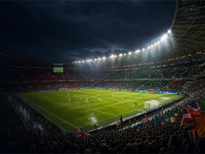
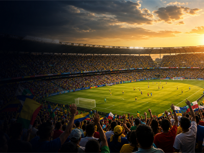

June
June 2028
Major events for the month.

Sport
UEFA European Championship 2028
9 Jun - 9 Jul 2028 · United Kingdom and Ireland

Sport
Copa America 2028
1 Jun - 31 Jul 2028 · South America / Americas, TBC